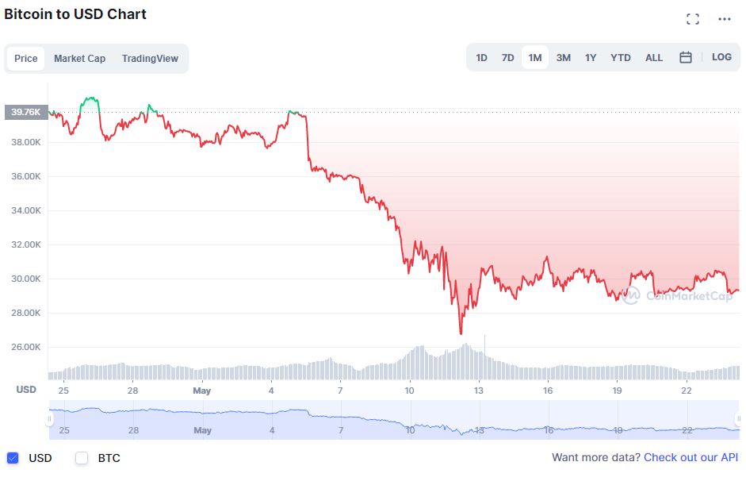
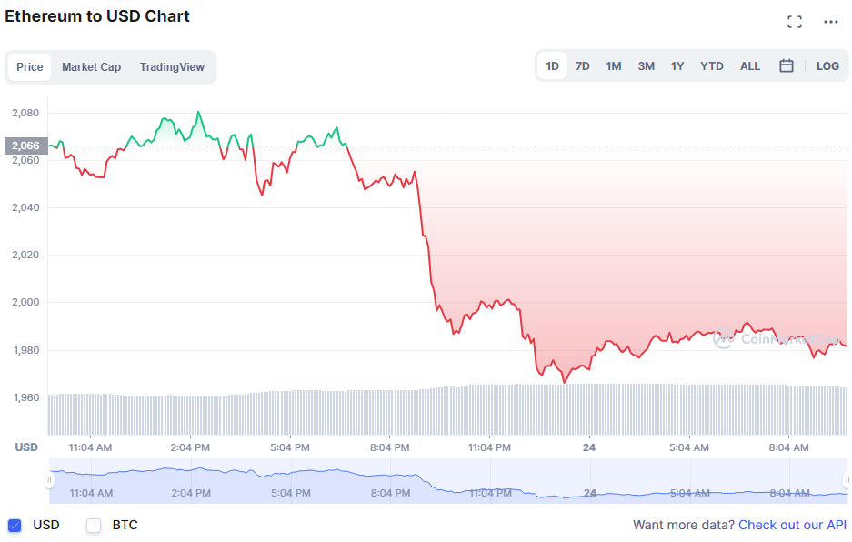
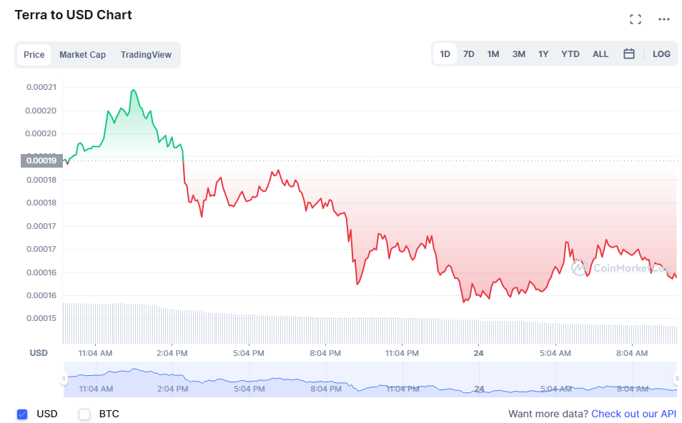

A leg jelentősebb és legmeghatározóbb valuták amelyek megszenvedték a crash-t:
Bitcoin:
 Bitcoin ára(2022.05.24) 29.373,93 USD
Ethereum:
 Ethereum ára(2022.05.24) 1.980 USD
Terra-projekt:
-Luna:
 Terra Luna ára(2022.05.24) 0,00016 USD
-TerraUSD:
TerraUSD ára(2022.05.24) 0,066 USD
A Terra-projekt egy dollár árához kötött kriptovalutát akart létrehozni, aminek két komponense volt. Ezek: -TerraUSD -Terra-Luna(röviden Luna)
A TerraUSD lett volna a dollárhöz kötött valuta, míg a Luna a másik egyensúlyozására működött, de mint ez a fenti képeken látszik, nem volt sokáig fenntartható.